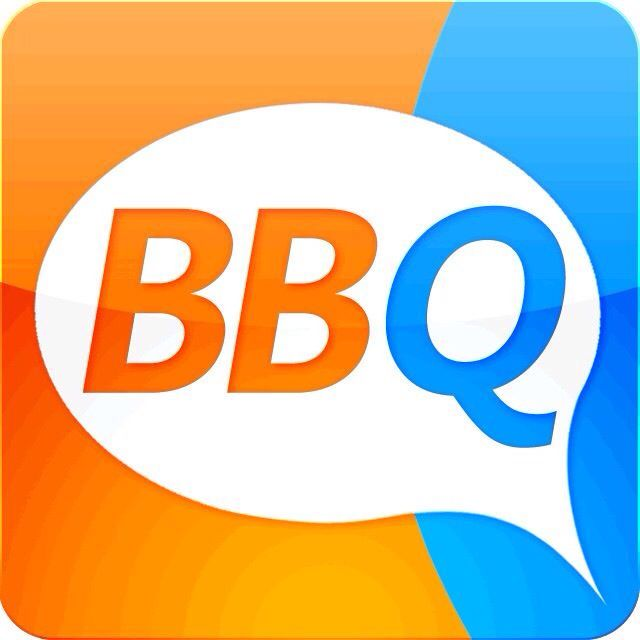

Hello world!
Rails Girls comes to ShenZhen at 2014.01.11!
旨在为女性提供工具和社区支持，帮助你们进入IT届以及有能力实现自己的idea和人生理想。
一天之后,你将有能力做出这样的 网站
活动时间: 2014 年 1 月 11 日一整天
报名截止时期: 2014 年 1 月 5 日
地点: 蛇口沃尔玛对面花样年美年广场5栋6楼阿基米( 创业主题, 咖啡 )
你会学到 设计, 原型制作 以及向我们的教练学习如何编程
你将需要 你自己的笔记本，好奇心和少许的想象力！
想要帮助我们? 我们在寻找志愿者和和教练。同时我们也在寻找赞助者支持我们这次公益活动。 给我们发邮件.
| 20.00 - |
Online-Installation partyOur tutors will help you do some pre-installation online. And you may get know the attendees a little bit online. We highly suggest you attend the installation party. |
|---|
| 9:30 - 10:00 |
RegistrationDuring the morning, we'll help you if you did not finish Ruby on Rails online-installation and maybe start with the talks early. |
|---|---|
| 10:00 - 10:15 |
WelcomeOutline of the day & word from our sponsors |
| 10:15 - 10:45 |
Understanding Web AppsAn Introduction to Software Engineering & Best Practices on Designing & Developing a Web Application |
| 10:25 - 11:00 |
An Introduction to Ruby ProgrammingVisit Tryruby.org because his introduction may be more of advanced Ruby programming than the basics. Let's get coding! |
| 11:00 - 12:00 |
WORKSHOPJumpstart your first web application! |
| 12:00 - 13:30 | Lunch |
| 13:30 - 13:50 |
Deploying a Ruby on Rails Application |
| 13:50 - 14:10 |
Lightning talks from coachesParticipants can ask anything about Ruby or Ruby on Rails from the coaches. The topics may be about Ruby programming, deployment and very basic things you will need to move forward and create Ruby on Rails applications. |
| 14:10 - 17:30 |
WORKSHOPExtend your application. |
| 18:30 onwards |
AFTERPARTYThe most important part. Location TBA. |
 阿基米文化产业孵化基地是一个以休闲办公、创意沙龙、公益咖啡为主题的创业孵化园，本次为我们提供一整天的场地。
 knewone:knewone.com 是让科技与设计改变生活的众筹平台，探索，分享和拥有新奇产品，让我们关注创新，活在未来
knewone:knewone.com 是让科技与设计改变生活的众筹平台，探索，分享和拥有新奇产品，让我们关注创新，活在未来
 简单BIZ:优雅地记录项目、客户与财务，生成报告。 国内第一款专门为自由职业者和10人以下微型企业设计的项目管理软件
简单BIZ:优雅地记录项目、客户与财务，生成报告。 国内第一款专门为自由职业者和10人以下微型企业设计的项目管理软件
 信+:信+ 客服工具，为App提供在线即时客服，以插件型式安装在任何App内，可避免用户流失，并收集用户行为数据。信+团队目前有4人，2个开发，1个产品，1个设计。現正在招开发合伙人！
信+:信+ 客服工具，为App提供在线即时客服，以插件型式安装在任何App内，可避免用户流失，并收集用户行为数据。信+团队目前有4人，2个开发，1个产品，1个设计。現正在招开发合伙人！

 Ruby on Rails 教程: 被誉为 Rails 开发入门最佳教程。这本书会教你如何践行“测试驱动开发”理念，一步一步开发出一个类 Twitter 程序。
Ruby on Rails 教程: 被誉为 Rails 开发入门最佳教程。这本书会教你如何践行“测试驱动开发”理念，一步一步开发出一个类 Twitter 程序。